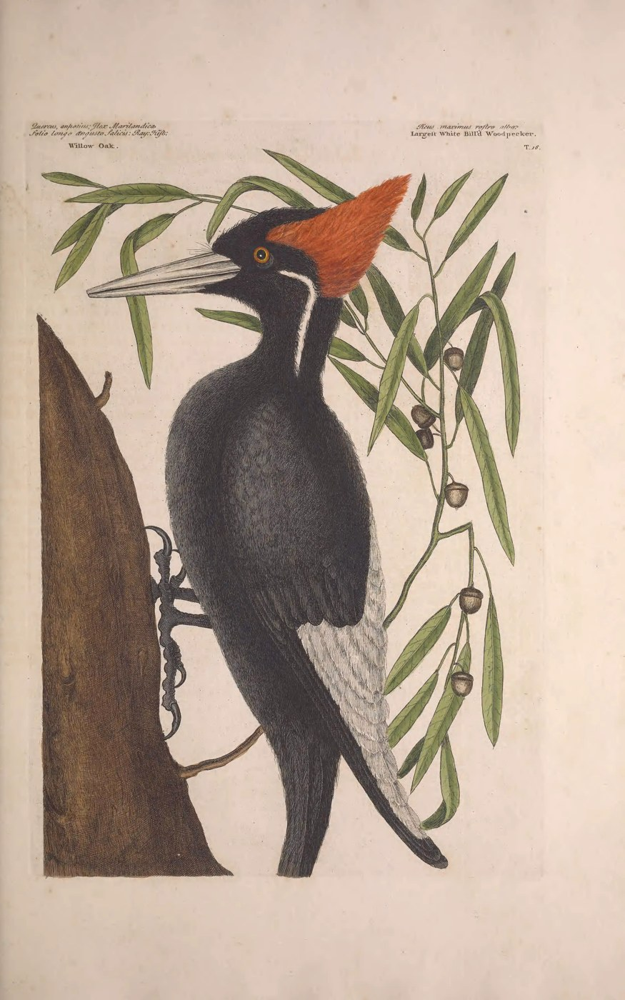

The Largest White-Bill Woodpecker (The Natural History of Carolina, Florida and the Bahama Islands, T. 16)
Mark Catesby · 1729–32 · Coloured etching · Smithsonian Libraries and Archives
Free to use
The bills of these woodpeckers, Catesby wrote, were prized by the Indians of Canada, who set them in a wreath, points outward, as coronets for their leaders and great warriors. Having none of the birds in the north, they bought the bills from southern peoples at two and sometimes three buckskins each. Catesby learned to etch the copper plates for the book himself.
Open in The ArtchiveFull-size file ↗
More like this


More by Mark Catesby